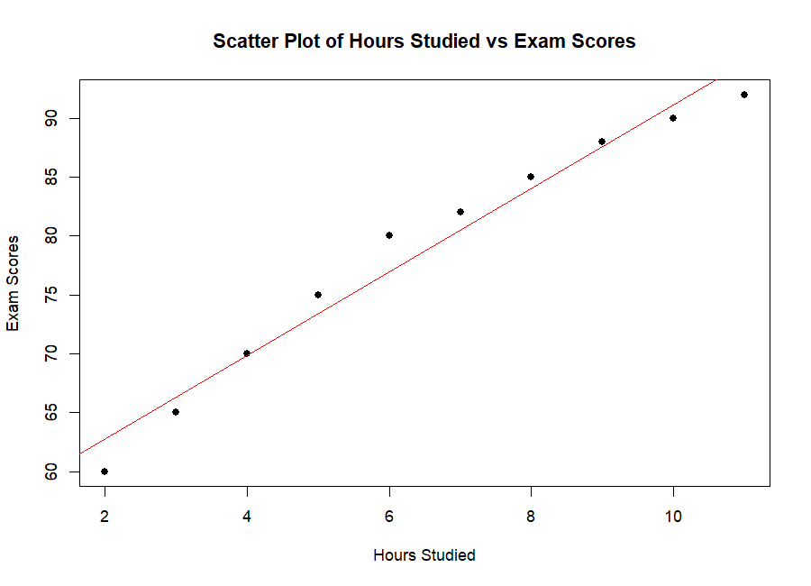
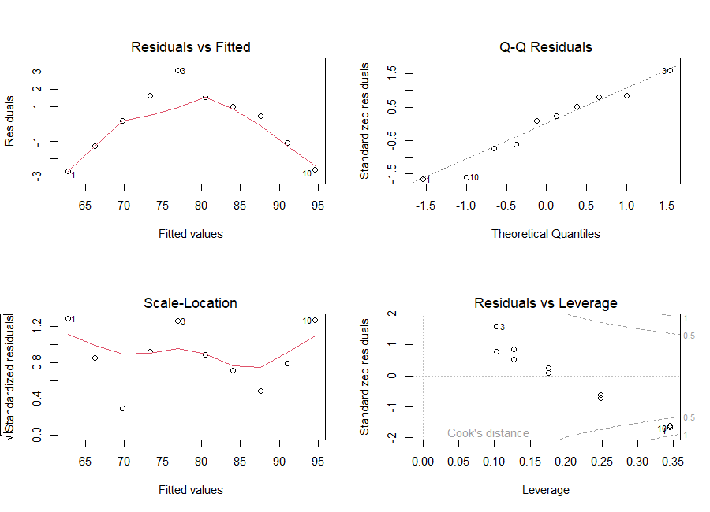

The correlation coefficient r
The correlation coefficient (Pearson's r) is one number that describes how strongly and in which direction two numeric variables move together along a straight line.
Perfect positive line
All points exactly on an uphill line.
No linear relationship
Knowing X tells you nothing about Y — at least not linearly.
Perfect negative line
All points exactly on a downhill line.
| |r| (size, ignoring the sign) | Strength | Direction |
|---|---|---|
| |r| ≥ 0.7 | Strong | r > 0: when one increases, the other tends to increase. r < 0: when one increases, the other tends to decrease. |
| 0.3 ≤ |r| < 0.7 | Moderate | |
| |r| < 0.3 | Weak |
Computing r step by step
For each point ask: is x above or below its average? Is y above or below its average? If both are above (or both below), the product of the two distances is positive — evidence for an uphill pattern. If one is above and the other below, the product is negative. Add up all products (top of the fraction). The bottom just rescales the answer so it always lands between −1 and +1, whatever the units.
The handout's example: 10 students, hours studied (x) and exam score (y). Follow the five steps:
hours <- c(2, 4, 6, 8, 10, 3, 5, 7, 9, 11) scores <- c(60, 70, 80, 85, 90, 65, 75, 82, 88, 92) # Calculate correlation coefficient r <- cor(hours, scores) print(r)
[1] 0.9844342
Interpretation: r ≈ 0.984 → a very strong positive linear relationship: students who study more tend to score higher. (The handout's text says "r = 0.986" — a small typo; R gives 0.9844.)
plot(hours, scores, main="Scatter Plot of Hours Studied vs Exam Scores",
xlab="Hours Studied", ylab="Exam Scores", pch=19)
abline(lm(scores ~ hours), col="red")

abline(lm(...)) adds the best-fitting straight line (we'll derive it in section 3.6). The points hug the line closely → r near 1.Cautions and limitations
Non-linear relationships
A perfect U-shape can have r ≈ 0. Zero correlation means "no linear relationship", not "no relationship". Try the perfect curve preset above.
Outliers
One extreme point can create a strong r out of nothing — or destroy a real one. Always plot before trusting r. Try + one outlier.
Correlation ≠ causation
Ice-cream sales and drownings are correlated — both rise in summer. A third variable (heat) drives both. High r never proves that X causes Y.
Is the correlation significant? The t-test for r
Our r comes from a sample. Even if two variables are unrelated in the whole population (true correlation ρ, "rho", = 0), a random sample can show some r ≠ 0 by chance. The t-test asks: is our r too big to be just luck?
H₀: ρ = 0
No correlation in the population.
H₁: ρ ≠ 0
There is a correlation (two-sided).
Handout example: r = 0.75, n = 30
The critical value for α = 0.05 (two-sided) with df = 28 is t* = 2.048. Since 6.00 > 2.048, we reject H₀: the correlation is statistically significant.
The same test in one line: cor.test()
result <- cor.test(hours, scores) print(result)
Pearson's product-moment correlation data: hours and scores t = 15.843, df = 8, p-value = 2.521e-07 alternative hypothesis: true correlation is not equal to 0 95 percent confidence interval: 0.9332770 0.9964409 sample estimates: cor 0.9844342
p-value < α (usually 0.05) → reject H₀. The p-value is the probability of getting a result at least this extreme if H₀ were true. It is not the probability that H₀ is true.
Simple linear regression: the model
Correlation is symmetric — cor(X, Y) = cor(Y, X) — and only describes association. Regression is directional: X explains or predicts Y, and it gives us an actual equation.
| Symbol | Name | Meaning |
|---|---|---|
| Yᵢ | response / dependent variable | what we explain — exam score of student i |
| Xᵢ | predictor / independent variable | what we use to explain — hours studied |
| β₀ | intercept | expected Y when X = 0 |
| β₁ | slope | expected change in Y for one more unit of X |
| εᵢ | error term | everything else (omitted factors, noise); assumed to average 0 with constant variance σ² |
| β̂ (beta-hat) | estimate | the hat means "estimated from data". Unknown β's → computed β̂'s |
| eᵢ = Yᵢ − Ŷᵢ | residual | vertical distance from the point to the fitted line — the observable stand-in for εᵢ |
Ordinary Least Squares: finding the best line
Infinitely many lines could go through the cloud. OLS picks the one that makes the Residual Sum of Squares (RSS) as small as possible:
Draw each residual as a little square (side = the miss). OLS chooses the line whose squares have the smallest total area. Squaring makes all misses positive and punishes big misses much more than small ones.
Deriving the formulas (the handout's three steps)
- First-order conditions. At the minimum, the slope of RSS in every direction is zero. Take partial derivatives and set them to 0: $$ \frac{\partial RSS}{\partial\hat\beta_0}=-2\sum(Y_i-\hat\beta_0-\hat\beta_1X_i)=0\;\Rightarrow\;\sum Y_i=n\hat\beta_0+\hat\beta_1\sum X_i $$ $$ \frac{\partial RSS}{\partial\hat\beta_1}=-2\sum X_i(Y_i-\hat\beta_0-\hat\beta_1X_i)=0\;\Rightarrow\;\sum X_iY_i=\hat\beta_0\sum X_i+\hat\beta_1\sum X_i^2 $$ These two equations are called the normal equations.
- Solve for the slope: $$ \hat\beta_1=\frac{\sum (X_i-\bar X)(Y_i-\bar Y)}{\sum (X_i-\bar X)^2}=\frac{\text{Cov}(X,Y)}{\text{Var}(X)}=r\,\frac{s_Y}{s_X} $$
- Then the intercept: the OLS line always passes through the point of means \((\bar X,\bar Y)\), so $$ \hat\beta_0=\bar Y-\hat\beta_1\bar X $$
With the numbers from section 3.2: \(\sum(X-\bar X)(Y-\bar Y)=292.5\) and \(\sum(X-\bar X)^2=82.5\), so \(\hat\beta_1=292.5/82.5=3.5455\) and \(\hat\beta_0=78.7-3.5455\times6.5=55.6545\).
\(\hat\beta_1 = r\,s_Y/s_X\) shows that the slope is the correlation re-expressed in the units of the data. Same sign as r always. Check it in R: cor(hours, scores) * sd(scores) / sd(hours) gives 3.5455, exactly the lm slope.
Assumptions: when is OLS "the best"? (Gauss–Markov)
Linear in the parameters
The true relationship is Y = β₀ + β₁X + ε.
E(ε | X) = 0
Errors average zero at every X — nothing systematic is left out that's related to X.
Var(ε | X) = σ²
Same error spread for all X (no funnel).
Cov(εᵢ, εⱼ) = 0
One error tells you nothing about another (important for data over time).
ε ~ N(0, σ²)
Needed for exact t- and F-tests in small samples.
BLUE
Under 1–4, OLS is the Best Linear Unbiased Estimator: no other linear unbiased method has smaller variance.
Fitting in R and reading summary(model)
hours <- c(2, 4, 6, 8, 10, 3, 5, 7, 9, 11) scores <- c(60, 70, 80, 85, 90, 65, 75, 82, 88, 92) model <- lm(scores ~ hours) summary(model)
Call: lm(formula = scores ~ hours) Residuals: Min 1Q Median 3Q Max -2.745 -1.245 0.300 1.391 3.073 Coefficients: Estimate Std. Error t value Pr(>|t|) (Intercept) 55.6545 1.5903 34.99 4.86e-10 *** hours 3.5455 0.2238 15.84 2.52e-07 *** --- Signif. codes: 0 '***' 0.001 '**' 0.01 '*' 0.05 '.' 0.1 ' ' 1 Residual standard error: 2.033 on 8 degrees of freedom Multiple R-squared: 0.9691, Adjusted R-squared: 0.9652 F-statistic: 251 on 1 and 8 DF, p-value: 2.521e-07
The PDF shows Intercept 54.7682, hours 3.5364, residual standard error 1.674, and a prediction of 77.75 for 6.5 hours. Running the exact same code in R gives 55.6545, 3.5455, 2.033 and 78.70 (you can check with the formulas in 3.6 or the ▶ run button). The r, t, p-value, R² and F in the handout are correct. This page uses the real R output throughout — if an exam asks you to interpret the handout's numbers, the interpretation is the same.
Where R² comes from: splitting the variation
anova(model)
Analysis of Variance Table
Response: scores
Df Sum Sq Mean Sq F value Pr(>F)
hours 1 1037.05 1037.05 250.99 2.521e-07 ***
Residuals 8 33.05 4.13Mean Sq of residuals = 33.05 / 8 = 4.13 = 2.033² (the residual standard error squared). F = 1037.05 / 4.13 = 251.
Diagnostic plots: plot(model)
plot(hours, scores, main="Scatter Plot & OLS Line (Hours vs Scores)",
xlab="Hours Studied", ylab="Exam Scores", pch=19, col="black")
abline(model, col="red", lwd=2)
grid()
par(mfrow=c(2, 2)) # 2 x 2 grid of plots
plot(model)
par(mfrow=c(1, 1)) # reset layout

Checks linearity
Points should bounce randomly around 0 with no curve. Here there is a clear arch: residuals are negative at both ends and positive in the middle. Scores level off for the hardest-studying students (diminishing returns), so a straight line is a simplification — despite R² = 0.97!
Checks normality of errors
Standardised residuals should follow the dashed diagonal. They do, roughly.
Checks equal variance
√|standardised residuals| vs fitted. The red line should be roughly flat.
Finds influential points
Points with high leverage (unusual X) and big residuals can steer the line. Watch for points beyond the dashed Cook's distance lines (0.5 or 1). Students 1 and 10 (2 h and 11 h, the extremes) have the highest leverage and sit near the 0.5 line, but none crosses it.
Prediction: confidence vs prediction intervals
new_student <- data.frame(hours = 6.5) predict(model, newdata = new_student, interval = "confidence", level = 0.95) predict(model, newdata = new_student, interval = "prediction", level = 0.95)
fit lwr upr 1 78.7 77.21772 80.18228 fit lwr upr 1 78.7 73.78383 83.61617
newdata must be a data frame whose column name matches the predictor in the model (hours). Point prediction: 55.6545 + 3.5455 × 6.5 = 78.7 (6.5 is the mean of hours, so the line gives exactly the mean score).
Where is the average score of all students who study 6.5 h?
77.2 to 80.2. Narrow: averages are predictable.
Where will one particular student's score fall?
73.8 to 83.6. Wider: it adds the individual's own random error.
Correlation vs regression — side by side
| Aspect | Correlation (r) | Linear regression (OLS) |
|---|---|---|
| Purpose | Strength & direction of linear association | Equation that explains/predicts Y from X |
| Symmetry | Symmetric: cor(X,Y) = cor(Y,X) | Directional: Y on X ≠ X on Y |
| Units | None, always between −1 and +1 | Slope in units of Y per unit of X (points per hour) |
| Key number | r = 0.984 | β̂₁ = 3.55, R² = r² = 0.969 |
| Test | cor.test: t = 15.84, p = 2.5e-07 | slope t-test: same t, same p (F = t²) |
| R functions | cor(x, y), cor.test(x, y) | lm(y ~ x), summary(), predict() |
Check yourself
Lecture 3 quiz
Summary
- r ∈ [−1, 1] measures linear association; |r| ≥ 0.7 strong, 0.3–0.7 moderate, < 0.3 weak. Always plot: curves, outliers, and causation are its blind spots.
- Test H₀: ρ = 0 with \(t = r\sqrt{n-2}/\sqrt{1-r^2}\), df = n − 2, or
cor.test(). - Regression model Y = β₀ + β₁X + ε. OLS minimises RSS → \(\hat\beta_1 = S_{xy}/S_{xx} = r s_Y/s_X\), \(\hat\beta_0 = \bar Y - \hat\beta_1\bar X\).
- Gauss–Markov (linearity, exogeneity, equal variance, no autocorrelation) → OLS is BLUE; normality → exact tests.
summary(lm): estimate, SE, t = est/SE, p-value; residual SE estimates σ; R² = 1 − RSS/TSS (= r² here); F = t² here.predict(…, interval = "confidence")for the mean response,"prediction"for one new case (wider).